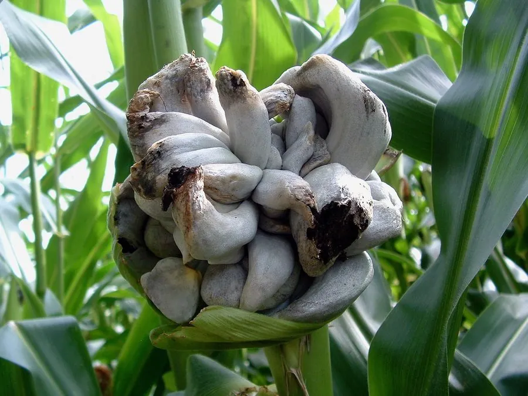

真菌 · 真菌界
玉米黑粉菌 Ustilago maydis

在玉米棒上形成灰黑色菌瘿的病原真菌，病瘿在墨西哥被当作食材“玉米松露”，也是遗传学研究的重要模式菌。
- 分类
- 门担子菌门纲黑粉菌纲目黑粉菌目科黑粉菌科属黑粉菌属
- 栖息环境
- 玉米的幼嫩组织，尤其是雌穗和茎部，温暖湿润时易发
- 地理分布
- 全球玉米产区广泛分布，中国玉米产区亦有发生
- 保护级别
- 暂无评估（植物病原菌，非保护对象）
物种志
玉米黑粉菌是担子菌门黑粉菌目的植物病原真菌，以单细胞酵母状形态和二核菌丝两种形态存在。它侵染玉米的幼嫩组织后，在穗部、茎和叶片上形成灰白色的瘤状菌瘿，菌瘿成熟后内部变成黑褐色粉末状的冬孢子，因此得名“黑粉菌”。
玉米黑粉菌是玉米的重要病害，可导致穗部畸形和减产。但在墨西哥等地，未成熟的菌瘿被当作食材，称为“玉米松露”，味道鲜美。它还是遗传学和植物病理学的重要模式生物，因为其生活史清晰、易于培养和遗传操作。防治以选用抗病品种、轮作和清除病残体为主；病菌以冬孢子在土壤和病残体中越冬，作为食材的菌瘿必须确认来源安全并充分加热。
形态与习性
- 分类担子菌门黑粉菌目黑粉菌科黑粉菌属
- 形态酵母状单细胞和二核菌丝，产生黑褐色冬孢子
- 菌瘿在玉米穗部形成灰白色瘤状菌瘿
- 寄主玉米的幼嫩组织
- 病害玉米瘤黑粉病，导致穗部畸形和减产
- 用途墨西哥将幼嫩菌瘿作为食材，也是模式生物
趣味知识
- 玉米黑粉菌会在玉米穗部形成灰黑色的瘤状菌瘿，因此得名。
- 在墨西哥，未成熟的菌瘿被当作食材，被称为“玉米松露”。
- 它是遗传学和植物病理学的重要模式生物，生活史清晰。